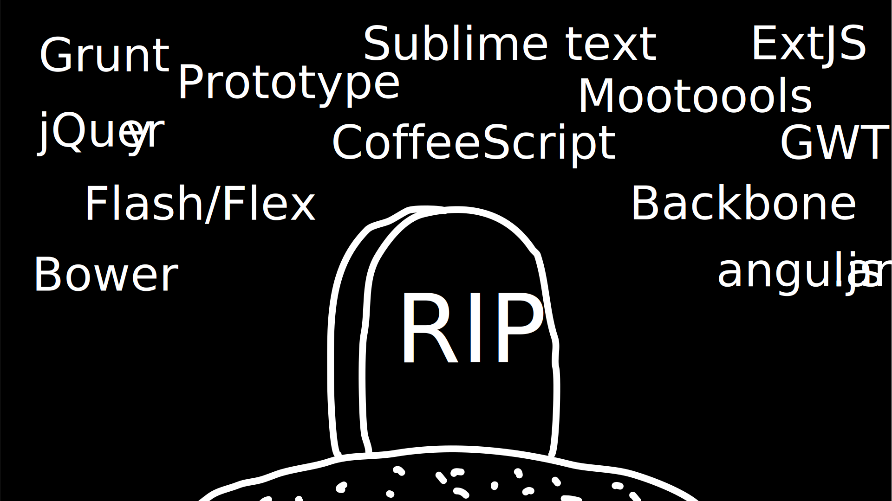
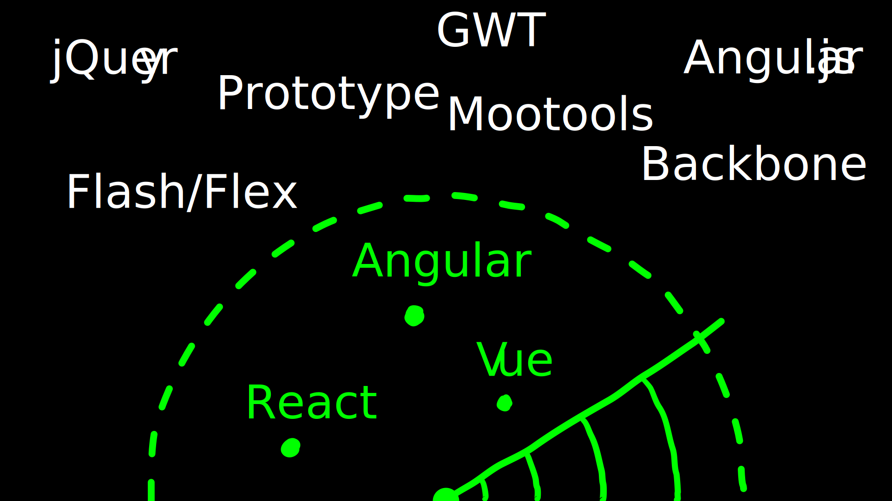
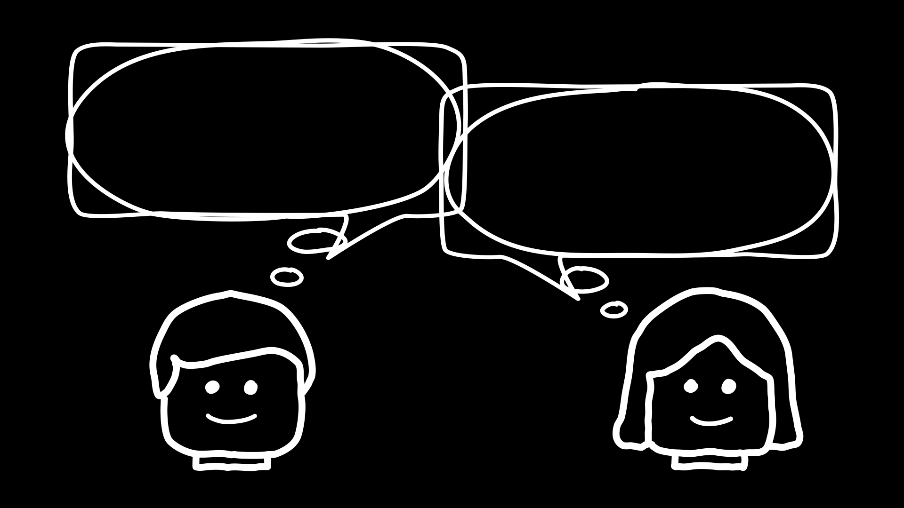

Mettre la musique (Gymnopedie) Voix off, grave, triste Perdu dans la jungle du Web moderne, de ses frameworks et ses standards, notre personnage principal est perdu. Depuis le début de sa carrière, au fil des semaines, des mois et des années… il voit naitre tous ces nouveaux outils révolutionnaires et prometteurs mais qui demain seront délaissés et remplacés par de nouveaux encore plus mieux.

C’est avec tristesse et mélancholie qu’il repense à tous ces frameworks, librairies, éditeurs de code et autres outils en ligne de commande… Un peu de respect pour les disparus SVP!

…qui s’ils n’ont pas déjà disparu de nos projets ont déjà disparu de nos radars de coolitude. Cette situation l’inquiète, le questionne et l’empêche de dormir. Dans le cadre de son travail, il doit faire des choix techniques mais il ne sais plus quoi faire. C’est à ce moment là que notre personnage pris la décision d’aller voir un thérapeuthe.

😎 Bonjour docteur. 👩⚕️ Bonjour Monsieur Sablonnière, alors, qu’est-ce qui vous amène ? 👩⚕️ La dernière fois que je vous ai vu, c’était il y a bien 10 ans… 👩⚕️ Vous commenciez votre premier job et vous étiez en pleine crise existentielle sur "est-ce qu’il faut utiliser des espaces ou des tabulations" et sur la "prononciation des guiffes animé"… 😎 Des jifs, vous voulez-dire ? 😎 Non mais ça c’est du passé, j’étais jeune et débutant, je ne me posais pas les bonnes questions.
Personnage H qui pense que les espaces c’est mieux.
😎 Aujourd’hui, je prends du recul sur le monde du frontend Web et je fais un constat : 😎 Les effets de mode et de hype nous rendent beaucoup trop dépendant de nos outils. 👩⚕️ Humm, dites mois en plus, je vois pas trop quel problèmes ça implique.
Problème numéro 1
😎 Problème numéro 1… 👩⚕️ Euh… quand on vous pose une question, vous répondez toujours en sortant un PowerPoint ?
Personnage H qui pense "mais j’utilise pas PowerPoint en plus"
😎 Bah ouais pourquoi, je vois pas le problème. Bref.
Problème numéro 1
😎 Problème numéro 1… 😎 Quand on choisi un framework (ou une lib) frontend 😎 on en oublie souvent le problème qu’on voulait résoudre à la base et pourtant on a l’impression d’avoir trouvé la bonne réponse, la solution à utiliser. 😎 Parfois, c’était le bon outil et parfois la solution est adaptée à des problèmes qu’on a pas vraiment. 👩⚕️ Mais pourquoi vous faites ça ? 😎 Parfois le choix se fait parceque la techno est cool (DX vs UX) 😎 Parfois parcequ’elle est utilisée/créée par un géant du Web 😎 Les recruteurs demandent tous cet outil, du coup, on se forme dessus, c’est un cercle qui s’auto alimente 😎 Il y a des confs sur le sujet et des meetups, ça doit forcément être bien 😎 Et pourtant vous n’avez peut-être pas le même contexte que les gens qui trouvent cette solution utile
Problème numéro 2
😎 Problème numéro 2… 😎 On fois qu’on a choisi un ecosystème (fwk/lib), on a tendance à s’enferme dedans 😎 On cherche systématiquement comment faire X ou Y avec l’écosystème foo alors que X ou Y sont universels (jQuery) 😎 On code l’énième version de feature/composant X ou Y pour cet écosystème 😎 Difficile de revenir en arrière quand on a investi du temps d’apprentissage 😎 On rempli nos cerveaux avec des noms de features (au lieu de les remplir avec des noms de pattern) 😎 On ne voit plus les défauts de nos propres outils 😎 On soutient des fonctionnalités sans les comprendre 😎 On ne regarde pas ce qui se fait ailleurs avec un oeil ouvert 😎 On compare un framework tel qu’Angular aux Web Components, ça n’a aucun sens
Problème numéro 3
😎 Problème numéro 3… 😎 On produit du code qui subit mal les effets du temps 😎 Les changements de son propre ecosystème 😎 Du code trop couplé au framework lui même 😎 L’arrivée de nouveaux standards 😎 Du code qui mélange les couches (souvent car on ne voit pas en quoi c’est un problème) 😎 Voire même sa disparition 😎 On jette à la poubelle plein de connaissances 😎 On jette à la poubelle plein de code
Hubert Sablonnière
@hsablonniere
Clever Cloud
17 avril 2019
DevoxxFR
leWeb,sesFrameworkset sesStandards
déconstruire pour mieux (re?)construire...
C’était quoi le problème ?
todo
listes besoins utilisateurs * accessible * responsive * 1er chargement rapide * navigations rapides * fluidité, pas trop de lag * pas trop de conso batterie * pas trop de conso CPU listes besoins développeur * gagner du temps (démarrer mon projet rapidement) * avoir des conventions * écrire le moins de code possible * écrire du code propre et lisible * ne pas trop réfléchir (modèle de pensée simple, abstractions) * isolation des impacts * écrire du code réutilisable (composants) * ne pas réinventer la roue * courbe d’apprentissage * ne pas dépendre des mes outils * pouvoir travailler avec un designer
Comment en est-on arrivé là ?
quote Pour comprendre où on va, il faut savoir d’où on vient.
schéma ères du web (vide)
bon anniversaire le web
schéma ères du web (old school ssr)
schéma ères du web (images)
schéma ères du web (forms)
schéma ères du web (SSR + JS)
schéma ères du web (AJAX with jQuery)
schéma ères du web (SPA era, client side templating)
schéma ères du web (SPA era, routing)
schéma ères du web (the mega bundle era with empty body)
schéma ères du web (SSR + hydratation + code splitting)
Ce que les frameworks nous apportent ?
Ce que les standards nous apportent ?
Est-ce que votre outil est prêt demain à adopter un standard et jetter son implem pour vous faire profiter du support natif ?
Séparons nos préoccupations
Ce que le futur nous réserve…
…Epilogue
Ne vous enfermez pas dans un framework/écosystème ! Analysez les briques qui composent ce framework/écosystème, leur rôle et les avantages/inconvénients qu’il apporte Intéressez vous aux standards pour savoir comment ils impacteront demain vos choix d’aujourd’hui Découpler, isoler, séparer pour mieux maitriser (perf, sécu) s’adapter au futur Intéressez vous à ce qui se fait dans tous ces écosystèmes (en particulier si vous êtes partisan du NIH et que vous avez votre propre framework)